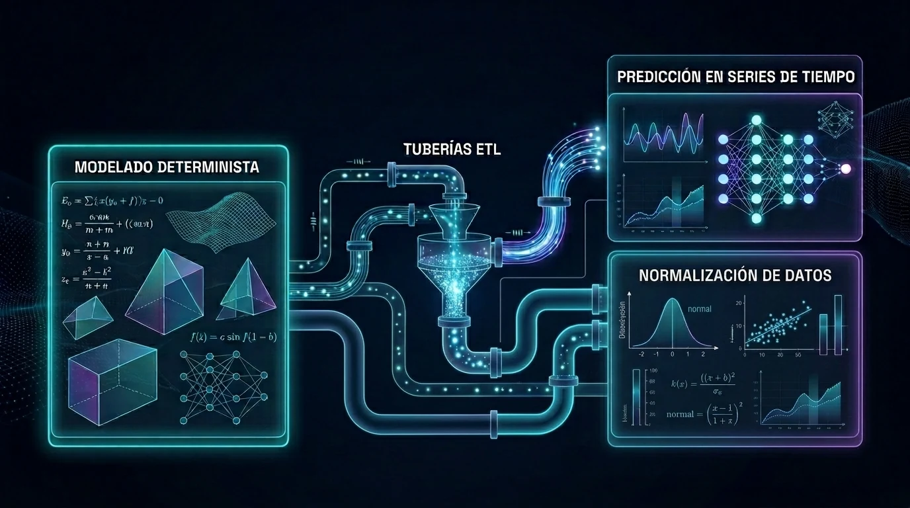

01
Arquitectura Transaccional
Sistemas Transaccionales de Alto Rendimiento.
Desarrollo web y dashboards reactivos a la medida con microservicios en FastAPI, baja latencia e integridad relacional absoluta.
FastAPI Async
PostgreSQL ACID
Docker Containers
https://tensor.dev/core-tx/dashboard
ONLINE

agent://nlp-rag/sales-flow
RAG CONNECTED
02
Inteligencia Artificial
Agentes de IA & Pipelines RAG.
Automatización y procesamiento semántico mediante chatbots corporativos con WhatsApp API oficial, embeddings en bases vectoriales y derivación asistida a humanos.
WhatsApp API
Vector DB Embeddings
Guardrails Anti-Sesgo
03
Física Computacional
Tesorería & Analítica Cuantitativa.
Modelado determinista, tuberías ETL de normalización continua y modelos matemáticos de proyección en series de tiempo para la toma de decisiones financieras sin especulación.
Simulación Determinista
Pipelines ETL
Series Temporales
quant://treasury/projection.sim
CALCULATING
